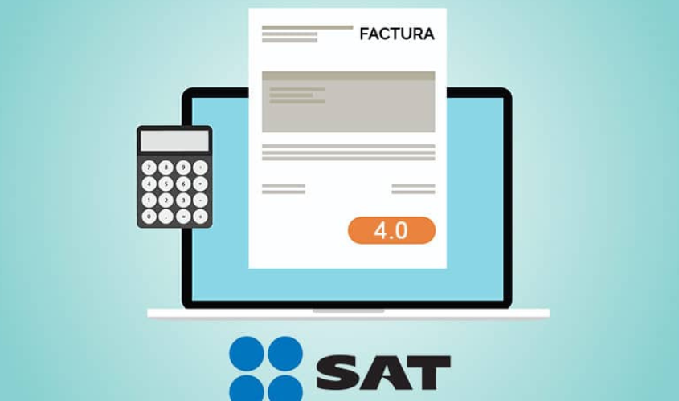

El Servicio de Administración Tributaria (SAT) es una entidad gubernamental en México encargada de administrar y supervisar el cumplimiento de las obligaciones fiscales. Su función principal es recaudar impuestos federales, aduanas y otros ingresos para financiar el gasto público. También se encarga de facilitar el cumplimiento de las obligaciones fiscales por parte de los contribuyentes, promover la educación fiscal y combatir la evasión fiscal.
¿Por qué es importante?
Imagina que el SAT es el "pegamento" que mantiene todo unido. Gracias a los impuestos que pagamos, el gobierno puede construir carreteras, hospitales, escuelas y muchas otras cosas que todos usamos. Es la forma en que colaboramos para tener un país en buen estado.
Aquí es donde entra en juego tu papel. El SAT tiene reglas sobre cómo debemos pagar impuestos. Puedes pensar en ello como una "lista de cosas por hacer" para que todos colaboremos de manera justa. Es importante entender estas reglas para evitar problemas y contribuir de manera efectiva.
El SAT no está aquí solo para pedir dinero. También está para ayudarte. Proporciona información sobre cómo pagar impuestos, ofrece servicios en línea para hacerlo más fácil y está allí para responder preguntas. Es como tener un compañero de viaje que te guía en el proceso.
El SAT también quiere que entiendas qué estás haciendo. Ofrece recursos educativos para que aprendas sobre impuestos y finanzas. Así, no te sientes perdido y puedes tomar decisiones informadas sobre tu dinero.
Recuerda, el SAT no es tu enemigo; es tu guía en el viaje de entender y contribuir al funcionamiento de nuestro país. ¡Y ahora estás listo para dar tus primeros pasos con confianza en el mundo fiscal mexicano!
¿Cómo darte de alta en el SAT?
Antes que nada, necesitas inscribirte ante el SAT. Piensa en esto como obtener tu "pase de acceso" al mundo fiscal. Puedes hacerlo en línea o en persona en una oficina local. Solo necesitarás algunos documentos personales.
¿Qué son los impuestos?
Los impuestos son como pequeñas contribuciones que hacemos para mantener funcionando el país. Hay diferentes tipos de impuestos, como el ISR (Impuesto Sobre la Renta) y el IVA (Impuesto al Valor Agregado). No te preocupes, no tienes que memorizar todo ahora, solo ten en cuenta que cada tipo de impuesto tiene reglas diferentes.
¿Cómo declarar nuestros ingresos?
Cuando ganas dinero, es hora de contarlo. La declaración de impuestos es como un informe de tus ingresos. Si trabajas para alguien más, tu empleador suele encargarse de esto, pero si eres independiente, necesitarás hacerlo tú mismo. No te preocupes, ¡es más fácil de lo que parece!
¡Deduce impuestos y paga menos!
Aquí está el truco para pagar menos impuestos: las deducciones. Son gastos que puedes restar de tus ingresos antes de calcular tus impuestos. Cosas como gastos médicos o educativos pueden ayudarte a pagar menos. ¡Aprovéchalas!
Llego el momento de pagar impuestos
Después de hacer tus cuentas, llega el momento de pagar impuestos. Puedes hacerlo en línea o en bancos autorizados. El SAT te guiará sobre cómo hacerlo, ¡así que no te preocupes!
Educación continua: aprende y evoluciona
El mundo fiscal cambia, así que es importante seguir aprendiendo. El SAT ofrece recursos educativos y actualizaciones para mantenerte al tanto de los cambios. ¡Educarte es la clave!
Recuerda, este proceso puede parecer complicado al principio, ¡pero no estás solo! El SAT está aquí para ayudarte en cada paso del camino. ¡Ahora estás listo para comenzar tu viaje hacia un manejo financiero sólido y sin estrés!
Referencias de consulta
- Conoce cuáles son tus obligaciones - Consultas de orientación - Portal de Trámites y Servicios - SAT. (s. f.). https://www.sat.gob.mx/consulta/06712/conoce-cuales-son-tus-obligaciones
- Ramírez, S. (2022, 4 julio). Guía de conceptos básicos si eres primerizo en el SAT. Expansión. https://expansion.mx/finanzas-personales/2022/03/23/guia-de-conceptos-basicos-si-eres-primerizo-en-el-sat
- Reyes, K. (2022, 23 diciembre). ¿Qué es el SAT en México y cuál es su función? Blog del E-commerce. https://www.tiendanube.com/mx/blog/que-es-el-sat/#:~:text=%C2%BFC%C3%B3mo%20funciona%20el%20SAT%3F,mercanc%C3%ADas%20del%20territorio%20nacional%20mexicano.
- Servicio de Administración Tributaria | Gobierno | Gob.mx. (s. f.). https://www.gob.mx/sat/que-hacemos
- Villanueva, A. (s. f.). ¿Qué es el SAT? guía para familiarizarte con sus principales trámites. Tecnológico de Monterrey. https://conecta.tec.mx/es/noticias/nacional/emprendedores/que-es-el-sat